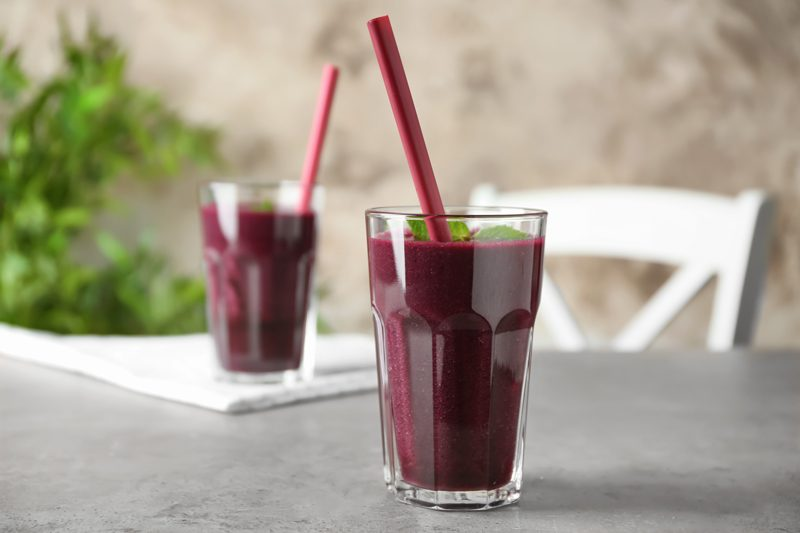

Banana Blueberry Hemp Smoothie
~ raw, vegan, gluten-free, nut-free ~
This morning’s Banana Blueberry Hemp Smoothie turned out more on the blackish/red side of the color wheel! Blueberries and spinach mingled together to create an exciting color for a morning smoothie. To be honest, the colors don’t bother me the least bit. I find it interesting that some people are thrown off guard by the color of a green smoothie. As long as it tastes good and is full of healthy goodness… I say, “Bring on any color you can give me!”

Potty Problems?
Blueberries can help relieve both diarrhea and constipation. In addition to soluble and insoluble fiber, blueberries also contain tannins, which act as astringents in the digestive system to reduce inflammation. Blueberries also promote urinary tract health. Blueberries contain the same compounds found in cranberries that help prevent or eliminate urinary tract infections.
Smoothie Tips
Blending fruits and vegetables break down the cells of plants and improve digestibility. BUT even with that, be sure to chew your smoothies. The chewing process starts the release of the saliva in your mouth. The mixture of saliva and your food is where digestion begins, which is a very healthy habit to create. It may feel strange at first, but soon, it will become an automatic response.
Ingredients:
Yields 44 oz
- 2 cups water
- 5 cups spinach
- 1 medium frozen banana, chopped
- 2 cups blueberries, frozen
- 2 Tbsp hemp seeds
- 1 Tbsp psyllium husk, organic
- 1 tsp Ceylon cinnamon
- 1 tsp NuStevia powder
- Pinch Himalayan pink salt
Preparation:
- To the blender, add the water and spinach. Blend until the spinach is fully broken down.
- The first thing to add to your blender is the liquid so that the greens can move more freely when blending.
- Add the frozen banana, blueberries, hemp seeds, psyllium, cinnamon, sweetener, and salt. Blend until smooth.
- I always recommend frozen bananas over fresh. Make a habit out of storing overripe, peeled bananas in the freezer for future smoothies.
- A dash of a high-quality salt will increase the minerals and improve the taste of your smoothie. A good green smoothie should be perfectly smooth.
- Optional – Add ice
- Always add the ice last; otherwise, you may over blend the ice, and it will make your smoothie watery rather than frosty.
- I usually only add ice if my fruit wasn’t frozen.
- Learn how to design your own smoothies by reading through my Template for Designing Smoothie Recipes.
How to Choose Blueberries
- Choose blueberries that are firm and have a lively, uniform hue colored with a whitish bloom. Shake the container, noticing whether the berries tend to move freely; if they do not, this may indicate that they are soft and damaged or moldy.
- Avoid berries that appear dull in color or are soft and watery in texture. They should be free from moisture since the presence of water will cause the berries to decay.
- When purchasing frozen berries, shake the bag gently to ensure that the berries move freely and are not clumped together, which may suggest that they have been thawed and refrozen.
- Blueberries that are cultivated in the United States are available from May through October, while imported berries may be found at other times of the year.
- For the most antioxidants, choose fully ripened berries.
© AmieSue.com